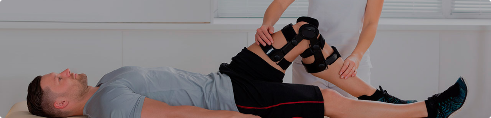
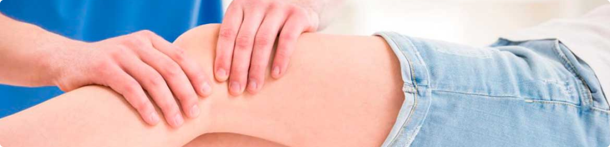

ФОРМА ВЫПУСКА:
капсулы 60 шт. по 400 мг.
СОСТАВ:
хондроитина сульфат 140 мг, глюкозамина гидрохлорид 130 мг, экстракт сабельника 130 мг, желатиновая капсула.
ФИТОТЕРАПЕВТИЧЕСКИЕ СВОЙСТВА И ДЕЙСТВИЯ:
общеукрепляющее, регенеративное, хондропротекторное, противовоспалительное, обезболивающее.
«САБЛЕКС-150» (SUBLEX-150)
комплексный препарат для стимуляции регенерации хрящевой ткани на основе хондроитина натрия, глюкозамина гидрохлорид и экстракта сабельника.
Хондроитин – отличается высокой способностью связывать воду, таким образом он обеспечивает механические и упругие свойства хряща. Хондроитин имеет свойства подавлять ферменты, которыепоявляются в суставе при травмах, заболеваниях опорно-двигательной системы, разрушающих хрящевую ткань. Оказывает противовоспалительное и обезболивающее действие в суставе. Прием хондроитина способствует ускорению регенерации костной и хрящевой ткани, улучшает состояние при дегенеративно-дистрофических заболеваниях, а также повышает подвижность суставов при остеоартрозе.
Глюкозамин – естественный компонент суставного хряща и соединительной ткани. Это вещество является моносахаридом, вырабатывается нашим организмом, присутствует во всех соединительных тканях и в суставных элементах: хрящах и синовиальной жидкости. Клетки хондроциты используют глюкозамин для построения и восстановления хрящевой ткани и для выработки гиалуроновой кислоты, являющейся основным из компонентов хрящей, коллагена, очень важного белка соединительной ткани и синовиальной жидкости. Прием глюкозамина стимулирует выработку хрящевого матрикса, а также предупреждает метаболическое разрушение хряща. Обладает некоторым противовоспалительным и обезболивающим действием, а также повышает подвижность суставов.
Сабельник – является одним из наиболее перспективных лекарственных растений, целебные свойства которого были известны издавна. Компоненты растения стимулируют выработку синовиальной жидкости, котораяиграет роль защитной смазки для суставов и обеспечивает их подвижность, улучшают структуру хрящей и укрепляют их, защищая от разрушений и дегенеративных изменений, а также помогают выводить из организма излишки солей, которые могут откладываться в различных тканях и органах. Как противовоспалительное, обезболивающее и корригирующее метаболизм средство, сабельник показан во вспомогательном лечении воспалительных и дегенеративных заболеваний суставов (артриты и артрозы, остеохондрозы, полиартрит, межпозвоночная грыжа, подагра, остеопороз и многие другие). Усиливает терапевтическое действие хондроитина и глюкозамина.
ПОКАЗАНИЯ К ПРИМЕНЕНИЮ САБЛЕКС 150:
- заболевания суставов и позвоночника (артрит, артроз, остеопороз, остеохондроз);
- обменно-дистрофические поражения суставов конечностей и позвоночника: первичный и вторичный остеоартроз, плечелопаточный периартрит, остеохондроз позвоночника;
- повышенная нагрузка на суставы (избыточная масса тела, занятия спортом, интенсивные физические нагрузки);
- травмы суставов и сухожилий, переломы (для ускорения образования костной мозоли);
- ограниченная подвижности;
- профилактика преждевременного стирания хрящей в суставах.
СПОСОБ ПРИМЕНЕНИЯ:
Взрослым по 1 капсуле 3 раза в день во время еды, запить водой. Курс приема 8-12 недель. Повторный курс - через 6 месяцев. В дальнейшем срок употребления и возможность повторного курса согласовывать с врачом. Перед применением требует консультации с врачом.
ПРОТИВОПОКАЗАНИЯ
Индивидуальная непереносимость компонентов продукта, беременность, период лактации, дети, тромбофлебиты, сахарный диабет, тяжелые нарушения функции почек, печени, склонность к кровотечениям, язва желудка или кишечника. В случае появления любых нежелательных реакций следует прекратить прием диетической добавки и обратиться к врачу.
Правила отпуска: без рецепта врача. Не является лекарственным средством.
Условия хранения: хранить в упаковке производителя, в сухом, защищенном от света месте, при температуре не выше 25˚С. Хранить в недоступном для детей месте.
Срок годности: 24 месяца с даты изготовления.
Дата изготовления: смотрите на упаковке.
Упаковка: 60 капсул по 400 мг.
ТУ У 15.8-06733459-004-2001.
Произведено по заказу: ТОВ «Крынта», г. Ивано-Франковск, ул. Незалежности, д. 67
Производитель: ООО «Научно-производственное предприятие Натуральных продуктов «Биола»
Адрес производства: ул. Юрьевская, 17, г. Харьков, Украина.
Саблекс 150 – не развод. Компоненты, входящие в его состав пришли многочисленные клинические исследования как у нас в стране, так и за рубежом. Специально разработанная формула дополняет и усиливает свойства каждого из них, обеспечивая тем самым высокую результативность при применении. Подтверждение эффективности Саблекс 150 можно найти как в среде специалистов, так и у покупателей препарата.
Отрицательные отзывы на форумах о Саблекс 150 так же встречаются. Стоить отметить, что они связаны либо с тем, что люди не соблюдают способ применения препарата, указанный в инструкции (уменьшают дозировку, пропускают прием, не заканчивают курс приема полностью), либо с тем, что прием Саблекс 150 начинают люди с тяжелыми нарушениями суставов, вызванных многолетними заболеваниями (в таких случаях показано лечение более сильными медикаментозными препаратами на гормональной основе).
Смирнов Глеб Сергеевич
Травматолог
5,0
Целительные свойства сабельника болотного применительно к суставам известны в народной медицине с давних пор. Широкомасштабные клинические исследования препаратов на его основе проводились еще в Советском Союзе. Сочетание в «Саблекс 150» экстракта сабельника с хондроитином и глюкозамином обеспечивает его высокую эффективность при различных заболеваниях суставов и позвоночника. Он так же дает положительные результаты при лечении травм суставов и сухожилий.
Громов Иван Яковлевич
Ортопед
5,0
Сложности с опорно-двигательным аппаратом у молодежи обычно связаны с интенсивными тренировками и повышенными физическими нагрузками. Для профилактики преждевременного стирания хрящей в суставах я рекомендую препарат Саблекс 150. Он имеет полностью натуральный состав. При приеме курсами – дает устойчивый положительный результат.
Гришина Марина Леонидовна
Ревматолог
5,0
Показания многочисленных клинических исследований говорят о том, что курсовой прием препаратов на основе хондроитинсульфата в течении 1-3 месяцев приводит к уменьшению отечности суставов, увеличению их подвижности и снижению болезненности. Характерно улучшение объективных показателей, включая рентгенологические (ширина суставной щели).
Официальный сайт поставщика
ПерейтиРаспространение среди населения и возраст с которого начинаются проявления По данным ВОЗ, заболевания суставов - одна из самых распространенных групп болезней на сегодняшний день. Они занимают третье место после заболеваний сердечно-сосудистой и пищеварительной систем. Статистика указывает на то, что у 25% жителей России имеются те или иные проблемы с суставами. А среди граждан, возраст которых превышает 60 лет, этот показатель достигает 97%. С каждым годом болезни суставов все больше "молодеют". Если раньше они обычно возникали у людей старше 40-45 лет, то сегодня они поражают мужчин и женщин в возрасте 30 лет и даже моложе. Основной группой риска являются офисные сотрудники, вынужденные ежедневно проводить по 8 и более часов за компьютером и игнорирующие занятия спортом. Впрочем, чрезмерная физическая нагрузка также часто приводит к болезням суставам. Особенно это характерно для профессиональных спортсменов, которые не только работают на износ, но и часто получают травмы. Недолеченные травмы - одна из основных предпосылок развития суставных болезней. Распространение таких заболеваний среди трудоспособного населения также обусловлено тем, что сейчас все большее число людей имеет избыточный вес. Повышение массы тела автоматически увеличивает нагрузку на суставы Другие причины суставных заболеваний - регулярные переохлаждения, несбалансированное питание, вредные привычки, сон на матрасах без ортопедических свойств..
Признаки
Скованность в суставах после долгого пребывания в неподвижной позе. Болевые ощущения во сне. Боли при изменении погоды. Дискомфорт в коленях при движении по наклонной плоскости, подъеме и спуске по лестнице. Напряжение, скованность, болезненные ощущения в пальцах и запястьях при долгой работе за компьютером (часто также возникает у профессиональных музыкантов, ювелиров и т.д.). "Хруст" или "щелканье" в коленях или пояснице при приседаниях, наклонах, поднятии тяжестей. Трудности при выполнении мелких действий, требующих точности (вставить нитку в иголку, наушник в гнездо телефона и т.п.).
Этапы развития заболеваний суставов
На начальных этапах развития суставных заболеваний их симптомы часто проявляются эпизодически и не беспокоят человека. Не каждый догадается о том, что внезапная боль в большом пальце на ноге может свидетельствовать о подагре, а гриппоподобное состояние вкупе со скованностью в суставах - о ревматоидном артрите. Если дискомфорт в суставе возникает после травмы, люди еще реже придают этому значение. Но если с самого начала не придпринимать никаких действий по восстановлению суставов, состояние постепенно ухудшается. Симптомы нарастают, а при ряде заболеваний (например, при остеоартрозе) изменения становятся необратимыми. К чему могут привести болезни суставов В первую очередь, суставные болезни значительно ухудшают качество жизни. Человек сталкивается с трудностями при выполнении ежедневных действий. Становится трудно встать с постели, пройтись на большое расстояние, подняться на свой этаж без лифта. Вести активный образ жизни все сложнее. Могут возникать боли, которые, будучи поначалу незначительными, редкими и эпизодическими, со временем становятся сильными и продолжительными. Со временем происходит разрушение сустава, а часто и околосуставных тканей. Возможны и более серьезные последствия - к примеру, на последней стадии артроза возможен анкилоз (сращение костей друг с другом). Ряд суставных заболеваний при отсутствии лечения приводит к инвалидности. Иногда качество жизни человека можно улучшить путем хирургического вмешательства (вплоть до замены изношенного сустава на искусственный), но это возможно не всегда.
Дмитрий Воронко
Харьков
12.08.2020
12.08.2020
Некоторое время назад начали беспокоить неприятные ощущения в суставах, особенно в локтях - похрустывания и щелчки при разгибании после длительного покоя. Решил не запускать проблему, почитал отзывы, приобрел Саблекс 150. Принимал курсом в соответствии с инструкцией – 8 недель. Результатами доволен. Хруст и щелчки прошли. Боли больше не беспокоят.
1
Михаил Анатольевич
Днепр
12.08.2020
12.08.2020
Дед давно мучается с суставами. Я недавно наткнулся в сети на препарат Саблекс. Проконсультировался со знакомым врачом на счет состава препарата, в итоге заказал. Этому очень рад! Уже во время приема курса наметились заметные улучшения. После перерыва буду заказывать еще курс.
3
Анна Голушко
Винница
12.08.2020
12.08.2020
Болевые ощущения в коленях вынудили меня искать какое-то средство, для обуздания недуга. Остановила свой выбор на Sublex из-за натурального состава препарата. Честно говоря, принимала только когда начинали появляться боли т.к. хотела растянуть упаковку на более длительное время. Оказалась, что этого недостаточно. Скорее всего виновата сама т.к. в инструкции сказано, что принимать следует курсами по 8-12 недель.
5
1
1. Где можно приобрести Sublex 150?
Купить Саблекс 150 можно только на официальном сайте. Важно! В аптеках препарат не продается. Это связано с политикой компании по предотвращению фальсификации продукции. Тем более не стоит покупать его с рук у частных лиц.
2. Сколько стоит Sublex 150?
Цена Саблекс 150 сайте – 490 грн. На текущий момент стоимость снижена в связи с проведением акции. Сроки и условия акции – уточняйте на официальном сайте Саблекс 150.
3. Как приобрести Sublex 150?
Заполните анкету на сайте дистрибьютора, указав имя и номер контактного телефона. Эксперт по препарату свяжется с вами, ответит на все вопросы и согласует детали доставки. Оплата товара происходит при получении.